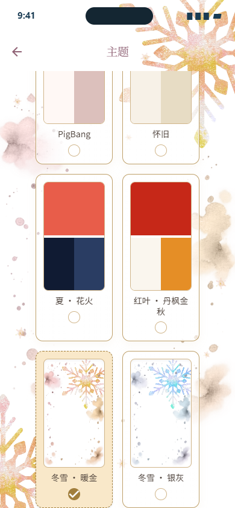
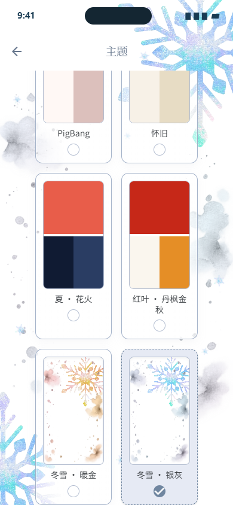

<!doctype html><html lang="zh-CN"><meta charset="utf-8"><meta name="viewport" content="width=device-width,initial-scale=1"><title>冬雪缩略图 · 去掉空框</title><style>body{margin:0;padding:24px;background:#F7F7F8;color:#42444A;font:15px/1.6 system-ui}main{max-width:820px;margin:auto}h1{font-size:22px;margin:0 0 8px}h2{font-size:17px}p{margin:0 0 20px}.pages{display:grid;grid-template-columns:repeat(2,minmax(0,1fr));gap:24px}figure{margin:0}figcaption{margin:0 0 10px}img,video{display:block;width:100%;max-width:390px;height:auto}a{color:#61758A}@media(max-width:650px){.pages{grid-template-columns:1fr}}</style><main><h1>冬雪缩略图 · 去掉两个空框</h1><p>两版只展示原雪花和晕染，主题名称、选中标记保留。</p><div class="pages"><figure><figcaption>暖金选中状态</figcaption></figure><figure><figcaption>银灰选中状态</figcaption></figure></div></main></html>